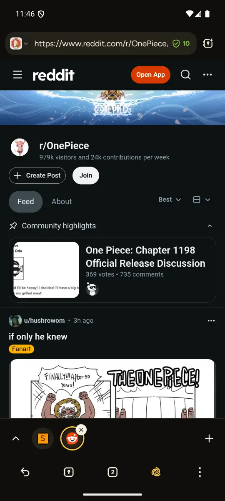
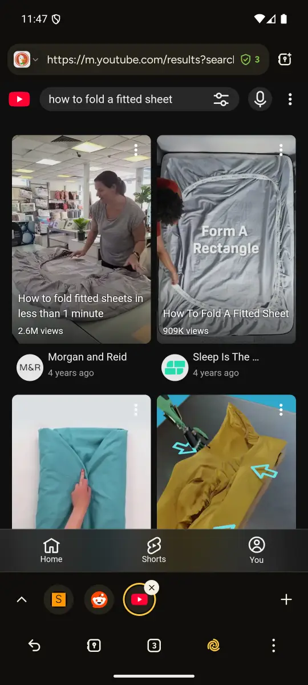
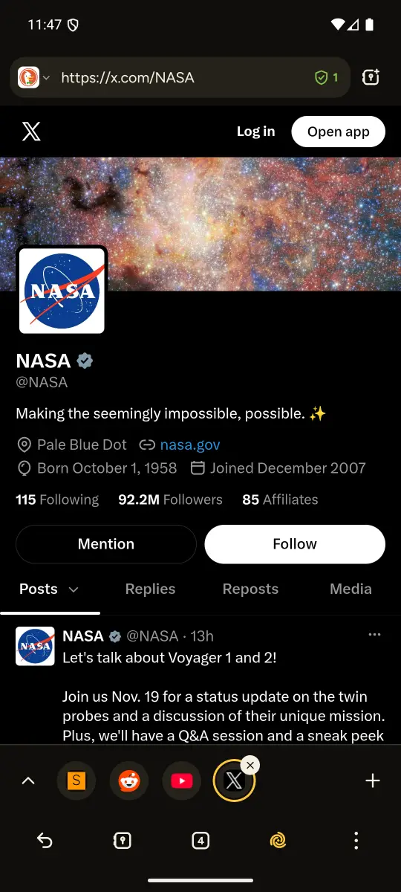
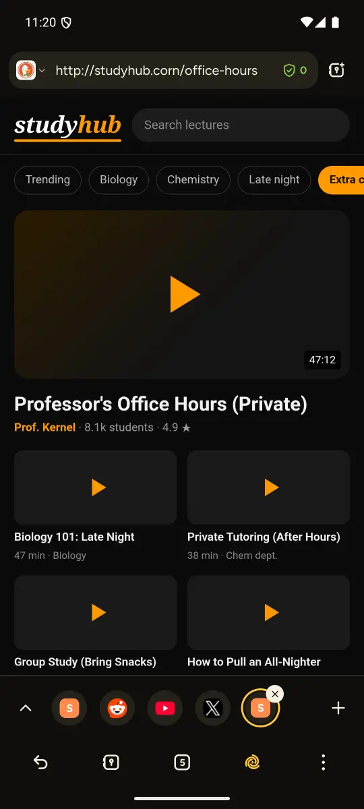
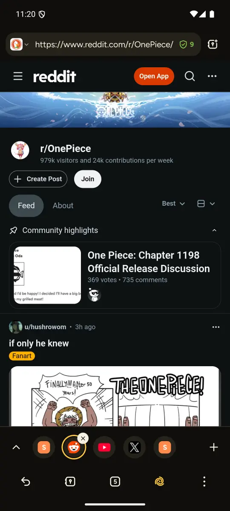
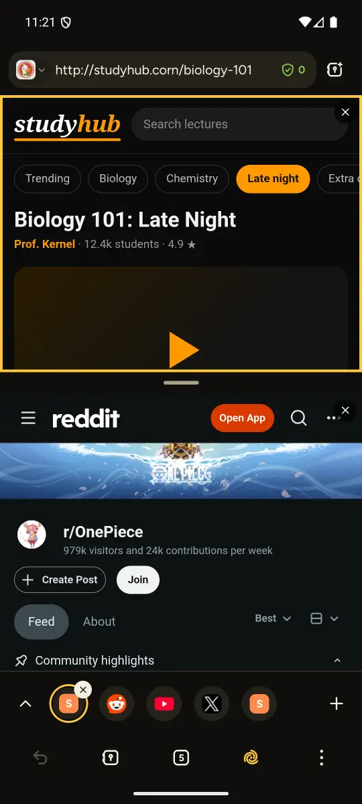
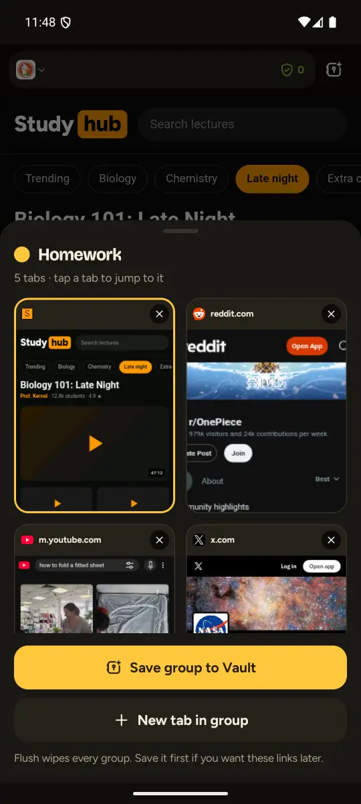
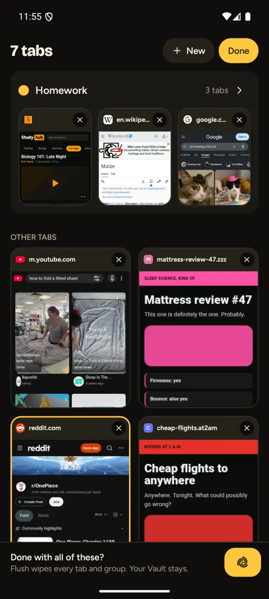
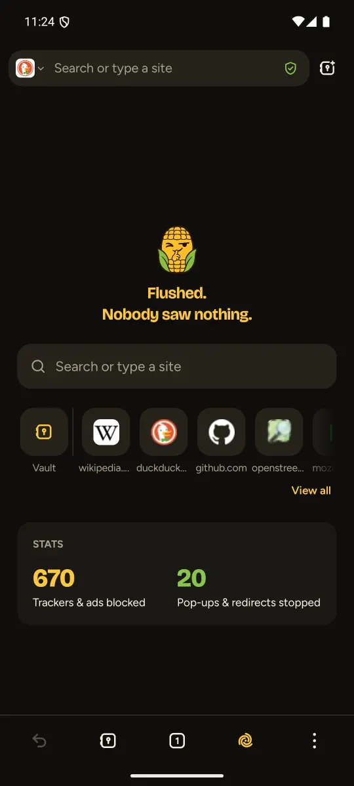

Corn is a free, private browser. One tap wipes your session, a PIN-locked Vault keeps only what you choose, and ads, trackers and pop-ups are blocked before they load.
Android 8+No accountOpen source









Tabs pile up.Open a link in a tab group and it lands on the Tab Group Strip.
Tab groups & split screen
One tap jumps between tabs on the strip, split screen shows two at once, and when the "homework" is done, one Flush clears the lot. Every frame here is a real screenshot of Corn.
Every frame is a real screenshot of Corn.
The Flush button
The “homework”, mattress review #47, flights you searched at 2 a.m.: one tap and the tabs, groups, cookies, cache and history are gone. Your Vault and the sites you keep logged in stay put. Go on, try it.
What's inside
Everything you'd expect from a browser, minus the bits that follow you around.
Save links into Collections with tags, behind your PIN. Your saved passwords live there too, encrypted; Corn fills one only when you tap. The Vault survives every Flush, and you can export it any time.
Ads, trackers, pop-ups and sneaky redirects are stopped before they load, using Brave's open-source blocking engine and public filter lists.
Favourites sit on the new tab. Sites on your Keep List stay logged in after a Flush. Everything else starts fresh.
The deal
No account, no ads, no tracking. Corn is free and open source, kept alive by donations, not by your data.
Get it
Corn is in beta, so it installs straight from GitHub for now. App stores come later.